Clustering Buenrostro et al (2018) scATAC-seq data using topic proportions using chromVAR processed counts with scPeaks (> 1 sample)
Kaixuan Luo
Last updated: 2020-11-23
Checks: 7 0
Knit directory: scATACseq-topics/
This reproducible R Markdown analysis was created with workflowr (version 1.6.2). The Checks tab describes the reproducibility checks that were applied when the results were created. The Past versions tab lists the development history.
Great! Since the R Markdown file has been committed to the Git repository, you know the exact version of the code that produced these results.
Great job! The global environment was empty. Objects defined in the global environment can affect the analysis in your R Markdown file in unknown ways. For reproduciblity it’s best to always run the code in an empty environment.
The command set.seed(20200729) was run prior to running the code in the R Markdown file. Setting a seed ensures that any results that rely on randomness, e.g. subsampling or permutations, are reproducible.
Great job! Recording the operating system, R version, and package versions is critical for reproducibility.
Nice! There were no cached chunks for this analysis, so you can be confident that you successfully produced the results during this run.
Great job! Using relative paths to the files within your workflowr project makes it easier to run your code on other machines.
Great! You are using Git for version control. Tracking code development and connecting the code version to the results is critical for reproducibility.
The results in this page were generated with repository version 86a20b5. See the Past versions tab to see a history of the changes made to the R Markdown and HTML files.
Note that you need to be careful to ensure that all relevant files for the analysis have been committed to Git prior to generating the results (you can use wflow_publish or wflow_git_commit). workflowr only checks the R Markdown file, but you know if there are other scripts or data files that it depends on. Below is the status of the Git repository when the results were generated:
Ignored files:
Ignored: .Rhistory
Ignored: .Rproj.user/
Untracked files:
Untracked: analysis/clusters_pca_structure_Cusanovich2018.Rmd
Untracked: analysis/process_data_Buenrostro2018_Chen2019.Rmd
Untracked: buenrostro2018.RData
Untracked: scripts/fit_all_models_Buenrostro_2018_chromVar_scPeaks_filtered.sbatch
Unstaged changes:
Modified: analysis/clusters_Buenrostro2018_chomVAR_scPeaks_filtered.Rmd
Modified: analysis/plots_Lareau2019_bonemarrow.Rmd
Modified: analysis/process_data_Buenrostro2018.Rmd
Modified: scripts/fit_all_models_Buenrostro_2018.sbatch
Note that any generated files, e.g. HTML, png, CSS, etc., are not included in this status report because it is ok for generated content to have uncommitted changes.
These are the previous versions of the repository in which changes were made to the R Markdown (analysis/clusters_Buenrostro2018_chomVAR_scPeaks.Rmd) and HTML (docs/clusters_Buenrostro2018_chomVAR_scPeaks.html) files. If you’ve configured a remote Git repository (see ?wflow_git_remote), click on the hyperlinks in the table below to view the files as they were in that past version.
| File | Version | Author | Date | Message |
|---|---|---|---|---|
| Rmd | 86a20b5 | kevinlkx | 2020-11-23 | cluster Buenrostro2018 data using chromVAR processed counts with scPeaks |
Here we explore the structure in the Buenrostro et al (2018) scATAC-seq data inferred from the multinomial topic model with \(k = 11\).
Load packages and some functions used in this analysis.
library(Matrix)
library(dplyr)
library(ggplot2)
library(cowplot)
library(fastTopics)
source("code/plots.R")We applied the analysis both unbinarized counts and binarized scATAC-seq data.
Unbinarized counts
Load the unbinarized data
data.dir <- "/project2/mstephens/kevinluo/scATACseq-topics/data/Buenrostro_2018/processed_data_Chen2019pipeline/chromVAR/"
load(file.path(data.dir, "Buenrostro_2018_scPeaks.RData"))
cat(sprintf("%d x %d counts matrix.\n",nrow(counts),ncol(counts)))
rm(counts)
samples$cell <- rownames(samples)
samples$label <- as.factor(samples$label)
# 2034 x 228965 counts matrix.Plot PCs of the topic proportions
We first use PCA to explore the structure inferred from the multinomial topic model with \(k = 11\):
out.dir <- "/project2/mstephens/kevinluo/scATACseq-topics/output/Buenrostro_2018_chromVAR_scPeaks/unbinarized/"
fit <- readRDS(file.path(out.dir, "/fit-Buenrostro2018-scd-ex-k=11.rds"))$fit
colors_topics <- c("#a6cee3","#1f78b4","#b2df8a","#33a02c","#fb9a99","#e31a1c",
"#fdbf6f","#ff7f00","#cab2d6","#6a3d9a","#ffff99")Plot PCs of the topic proportions.
p.pca1.1 <- pca_plot(poisson2multinom(fit),pcs = 1:2,fill = "none")
p.pca1.2 <- pca_plot(poisson2multinom(fit),pcs = 3:4,fill = "none")
p.pca1.3 <- pca_plot(poisson2multinom(fit),pcs = 5:6,fill = "none")
p.pca1.4 <- pca_plot(poisson2multinom(fit),pcs = 7:8,fill = "none")
p.pca1.5 <- pca_plot(poisson2multinom(fit),pcs = 9:10,fill = "none")
plot_grid(p.pca1.1,p.pca1.2,p.pca1.3,p.pca1.4,p.pca1.5)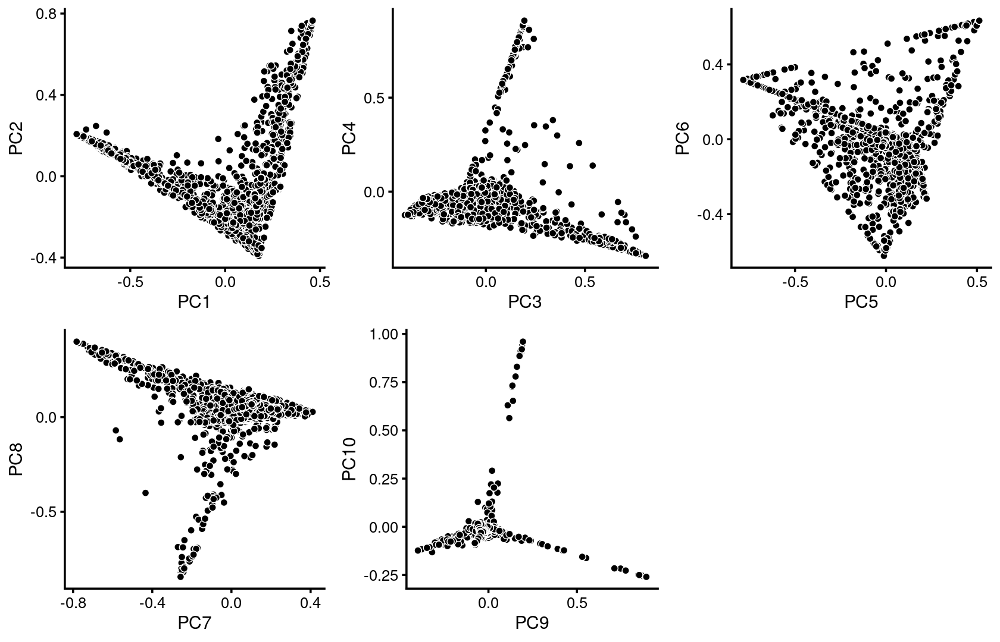
Some of the structure is more evident from “hexbin” plots showing the density of the points.
breaks <- c(0,1,5,10,100,Inf)
p.pca2.1 <- pca_hexbin_plot(poisson2multinom(fit), pcs = 1:2, breaks = breaks) + guides(fill = "none")
p.pca2.2 <- pca_hexbin_plot(poisson2multinom(fit), pcs = 3:4, breaks = breaks) + guides(fill = "none")
p.pca2.3 <- pca_hexbin_plot(poisson2multinom(fit), pcs = 5:6, breaks = breaks) + guides(fill = "none")
p.pca2.4 <- pca_hexbin_plot(poisson2multinom(fit), pcs = 7:8, breaks = breaks) + guides(fill = "none")
p.pca2.5 <- pca_hexbin_plot(poisson2multinom(fit), pcs = 9:10, breaks = breaks) + guides(fill = "none")
plot_grid(p.pca2.1,p.pca2.2,p.pca2.3,p.pca2.4,p.pca2.5)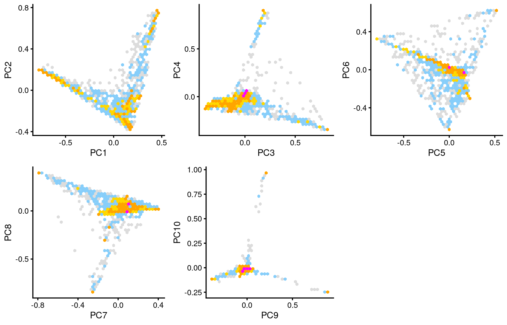
Layer the cell labels onto the PC plots
Here, we layer the cell labels onto the PC plots.
p.pca3.1 <- labeled_pca_plot(fit,1:2,samples$label,font_size = 7,
legend_label = "Cell labels")
p.pca3.2 <- labeled_pca_plot(fit,3:4,samples$label,font_size = 7,
legend_label = "Cell labels")
p.pca3.3 <- labeled_pca_plot(fit,5:6,samples$label,font_size = 7,
legend_label = "Cell labels")
p.pca3.4 <- labeled_pca_plot(fit,7:8,samples$label,font_size = 7,
legend_label = "Cell labels")
p.pca3.5 <- labeled_pca_plot(fit,9:10,samples$label,font_size = 7,
legend_label = "Cell labels")
plot_grid(p.pca3.1,p.pca3.2,p.pca3.3,p.pca3.4,p.pca3.5)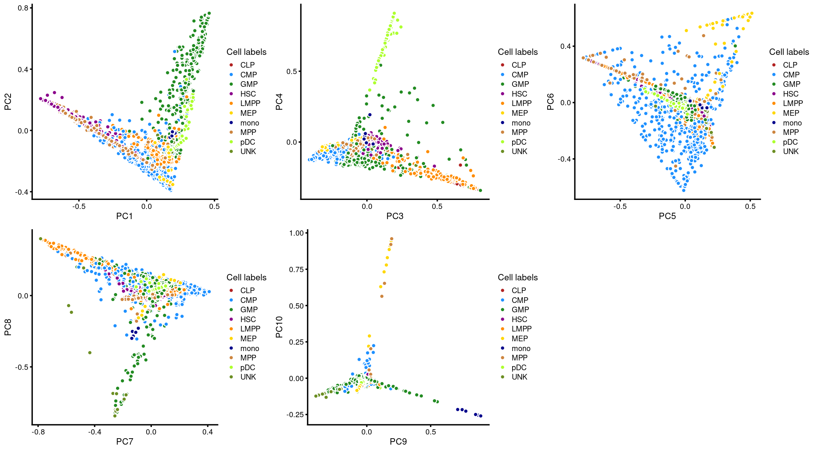
Visualize by structure plot grouped by cell labels.
set.seed(10)
samples$label <- as.factor(samples$label)
p.structure.1 <- structure_plot(poisson2multinom(fit),
grouping = samples[, "label"],n = Inf,gap = 20,
perplexity = 50,topics = 1:11,colors = colors_topics,
num_threads = 4,verbose = FALSE)
# Perplexity automatically changed to 24 because original setting of 50 was too large for the number of samples (78)
# Perplexity automatically changed to 44 because original setting of 50 was too large for the number of samples (138)
# Perplexity automatically changed to 20 because original setting of 50 was too large for the number of samples (64)
# Perplexity automatically changed to 46 because original setting of 50 was too large for the number of samples (142)
# Perplexity automatically changed to 45 because original setting of 50 was too large for the number of samples (141)
# Perplexity automatically changed to 18 because original setting of 50 was too large for the number of samples (60)
print(p.structure.1)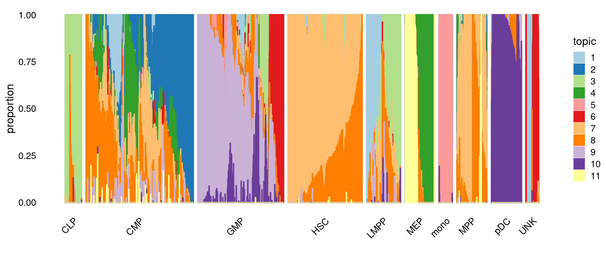
k-means clustering on topic proportions
Define clusters using k-means, and then create structure plot based on the clusters from k-means.
Define clusters using k-means with 10 clusters:
set.seed(10)
clusters.10 <- factor(kmeans(poisson2multinom(fit)$L,centers = 10)$cluster)
print(sort(table(clusters.10),decreasing = TRUE))
# clusters.10
# 9 5 6 8 10 3 7 4 1 2
# 432 252 226 216 213 201 186 155 93 60Structure plot based on k-means clusters
p.structure.2 <- structure_plot(poisson2multinom(fit),
grouping = clusters.10,
# rows = order(samples$label), # samples are grouped by clusters first, then by celltype labels
n = Inf,gap = 20,
perplexity = 50,topics = 1:11,colors = colors_topics,
num_threads = 4,verbose = FALSE)
# Perplexity automatically changed to 29 because original setting of 50 was too large for the number of samples (93)
# Perplexity automatically changed to 18 because original setting of 50 was too large for the number of samples (60)
print(p.structure.2)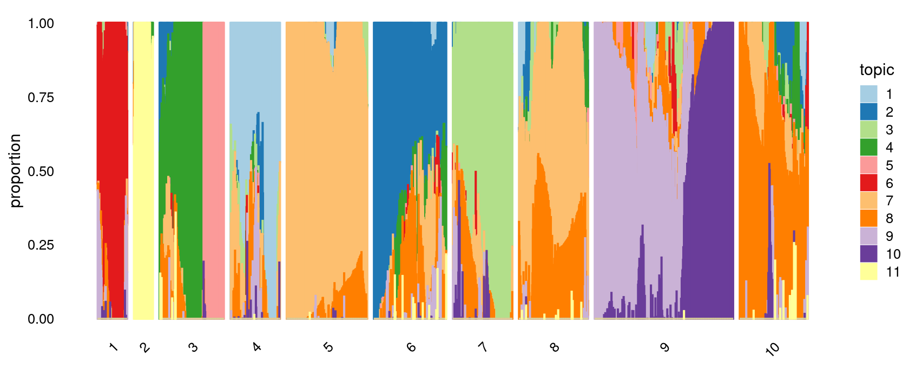
Define clusters using k-means with 15 clusters:
set.seed(10)
clusters.15 <- factor(kmeans(poisson2multinom(fit)$L,centers = 15)$cluster)
print(sort(table(clusters.15),decreasing = TRUE))
# clusters.15
# 5 8 14 11 6 9 4 10 12 15 13 1 7 3 2
# 254 193 189 180 163 145 138 131 126 109 108 91 81 66 60Structure plot based on k-means clusters
p.structure.3 <- structure_plot(poisson2multinom(fit),
grouping = clusters.15,
# rows = order(samples$label), # samples are grouped by clusters first, then by celltype labels
n = Inf,gap = 20,
perplexity = 50,topics = 1:11, colors = colors_topics,
num_threads = 4,verbose = FALSE)
# Perplexity automatically changed to 29 because original setting of 50 was too large for the number of samples (91)
# Perplexity automatically changed to 18 because original setting of 50 was too large for the number of samples (60)
# Perplexity automatically changed to 20 because original setting of 50 was too large for the number of samples (66)
# Perplexity automatically changed to 44 because original setting of 50 was too large for the number of samples (138)
# Perplexity automatically changed to 25 because original setting of 50 was too large for the number of samples (81)
# Perplexity automatically changed to 47 because original setting of 50 was too large for the number of samples (145)
# Perplexity automatically changed to 42 because original setting of 50 was too large for the number of samples (131)
# Perplexity automatically changed to 40 because original setting of 50 was too large for the number of samples (126)
# Perplexity automatically changed to 34 because original setting of 50 was too large for the number of samples (108)
# Perplexity automatically changed to 35 because original setting of 50 was too large for the number of samples (109)
print(p.structure.3)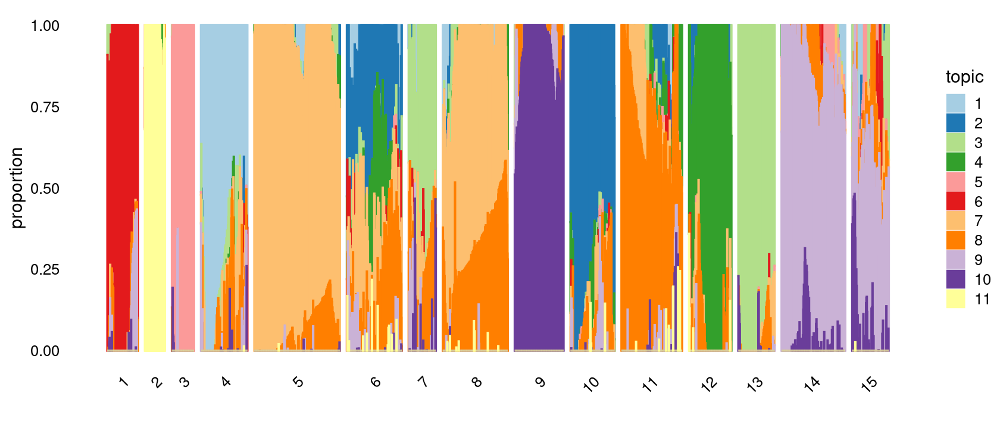
Define clusters using k-means with 20 clusters:
set.seed(10)
clusters.20 <- factor(kmeans(poisson2multinom(fit)$L,centers = 20)$cluster)
print(sort(table(clusters.20),decreasing = TRUE))
# clusters.20
# 14 5 8 3 9 20 18 11 4 12 13 1 16 7 19 17 10 6 2 15
# 175 162 147 132 126 124 115 114 112 108 106 91 86 79 78 66 62 61 60 30Structure plot based on k-means clusters
p.structure.4 <- structure_plot(poisson2multinom(fit),
grouping = clusters.20,
# rows = order(samples$label), # samples are grouped by clusters first, then by celltype labels
n = Inf,gap = 20,
perplexity = 50,topics = 1:11, colors = colors_topics,
num_threads = 4,verbose = FALSE)
# Perplexity automatically changed to 29 because original setting of 50 was too large for the number of samples (91)
# Perplexity automatically changed to 18 because original setting of 50 was too large for the number of samples (60)
# Perplexity automatically changed to 42 because original setting of 50 was too large for the number of samples (132)
# Perplexity automatically changed to 36 because original setting of 50 was too large for the number of samples (112)
# Perplexity automatically changed to 19 because original setting of 50 was too large for the number of samples (61)
# Perplexity automatically changed to 25 because original setting of 50 was too large for the number of samples (79)
# Perplexity automatically changed to 47 because original setting of 50 was too large for the number of samples (147)
# Perplexity automatically changed to 40 because original setting of 50 was too large for the number of samples (126)
# Perplexity automatically changed to 19 because original setting of 50 was too large for the number of samples (62)
# Perplexity automatically changed to 36 because original setting of 50 was too large for the number of samples (114)
# Perplexity automatically changed to 34 because original setting of 50 was too large for the number of samples (108)
# Perplexity automatically changed to 34 because original setting of 50 was too large for the number of samples (106)
# Perplexity automatically changed to 8 because original setting of 50 was too large for the number of samples (30)
# Perplexity automatically changed to 27 because original setting of 50 was too large for the number of samples (86)
# Perplexity automatically changed to 20 because original setting of 50 was too large for the number of samples (66)
# Perplexity automatically changed to 37 because original setting of 50 was too large for the number of samples (115)
# Perplexity automatically changed to 24 because original setting of 50 was too large for the number of samples (78)
# Perplexity automatically changed to 40 because original setting of 50 was too large for the number of samples (124)
print(p.structure.4)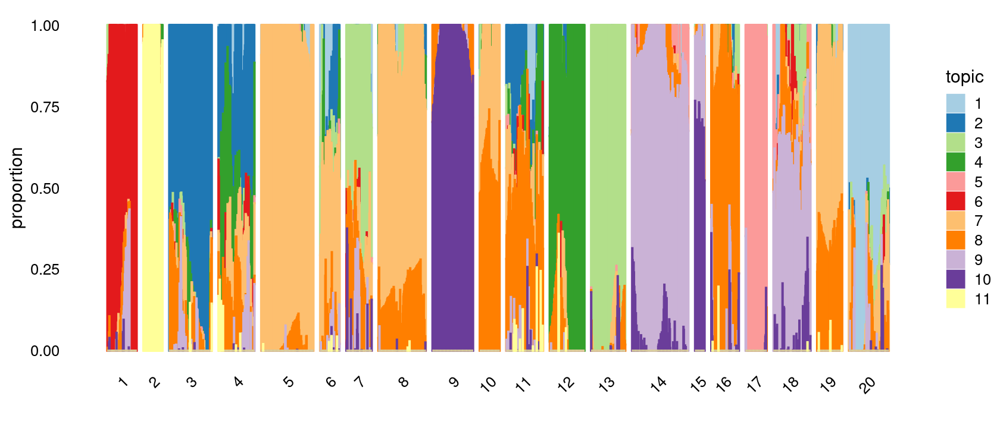
Refine clusters
We then further refine the clusters based on k-means result with 20 clusters: merge clusters 3, 4; merge clusters 5, 6, 8, 19; merge clusters 14 and 18.
clusters.merged <- clusters.20
clusters.merged[clusters.20 %in% c(3,4)] <- 3
clusters.merged[clusters.20 %in% c(5,6,8,19)] <- 5
clusters.merged[clusters.20 %in% c(14,18)] <- 14
clusters.merged <- factor(clusters.merged, labels = paste0("c", c(1:length(unique(clusters.merged)))))
samples$cluster_kmeans <- clusters.merged
table(clusters.merged)
# clusters.merged
# c1 c2 c3 c4 c5 c6 c7 c8 c9 c10 c11 c12 c13 c14 c15
# 91 60 244 448 79 126 62 114 108 106 290 30 86 66 124p.structure.refined <- structure_plot(poisson2multinom(fit),
grouping = clusters.merged,
# rows = order(samples$label), # samples are grouped by clusters first, then by celltype labels
n = Inf,gap = 20,
perplexity = 50,topics = 1:11,colors = colors_topics,
num_threads = 4,verbose = FALSE)
# Perplexity automatically changed to 29 because original setting of 50 was too large for the number of samples (91)
# Perplexity automatically changed to 18 because original setting of 50 was too large for the number of samples (60)
# Perplexity automatically changed to 25 because original setting of 50 was too large for the number of samples (79)
# Perplexity automatically changed to 40 because original setting of 50 was too large for the number of samples (126)
# Perplexity automatically changed to 19 because original setting of 50 was too large for the number of samples (62)
# Perplexity automatically changed to 36 because original setting of 50 was too large for the number of samples (114)
# Perplexity automatically changed to 34 because original setting of 50 was too large for the number of samples (108)
# Perplexity automatically changed to 34 because original setting of 50 was too large for the number of samples (106)
# Perplexity automatically changed to 8 because original setting of 50 was too large for the number of samples (30)
# Perplexity automatically changed to 27 because original setting of 50 was too large for the number of samples (86)
# Perplexity automatically changed to 20 because original setting of 50 was too large for the number of samples (66)
# Perplexity automatically changed to 40 because original setting of 50 was too large for the number of samples (124)
print(p.structure.refined)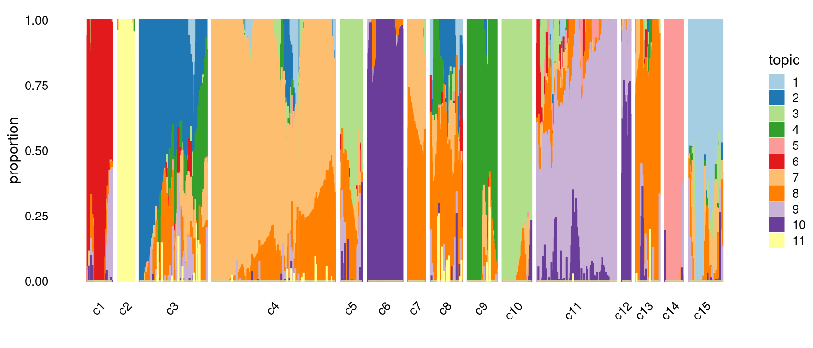
Group samples by k-means clusters first, then by celltype labels:
p.structure.refined <- structure_plot(poisson2multinom(fit),
grouping = clusters.merged,
rows = order(samples$label), # samples are grouped by clusters first, then by celltype labels
n = Inf,gap = 20,
perplexity = 50,topics = 1:11,colors = colors_topics,
num_threads = 4,verbose = FALSE)
print(p.structure.refined)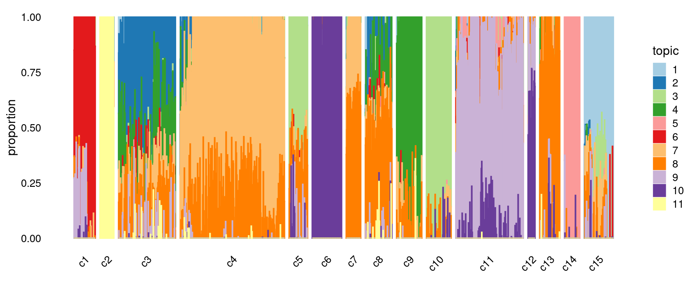
The clusters defined by k-means on topic proportions reasonably identify the clusters shown in the PCA hexbin plots (below).
p.pca.4.1 <- labeled_pca_plot(fit,1:2,samples$cluster_kmeans,font_size = 7,
legend_label = "cluster_kmeans")
p.pca.4.2 <- labeled_pca_plot(fit,3:4,samples$cluster_kmeans,font_size = 7,
legend_label = "cluster_kmeans")
p.pca.4.3 <- labeled_pca_plot(fit,5:6,samples$cluster_kmeans,font_size = 7,
legend_label = "cluster_kmeans")
p.pca.4.4 <- labeled_pca_plot(fit,7:8,samples$cluster_kmeans,font_size = 7,
legend_label = "cluster_kmeans")
p.pca.4.5 <- labeled_pca_plot(fit,9:10,samples$cluster_kmeans,font_size = 7,
legend_label = "cluster_kmeans")
plot_grid(p.pca.4.1,p.pca.4.2,p.pca.4.3,p.pca.4.4,p.pca.4.5)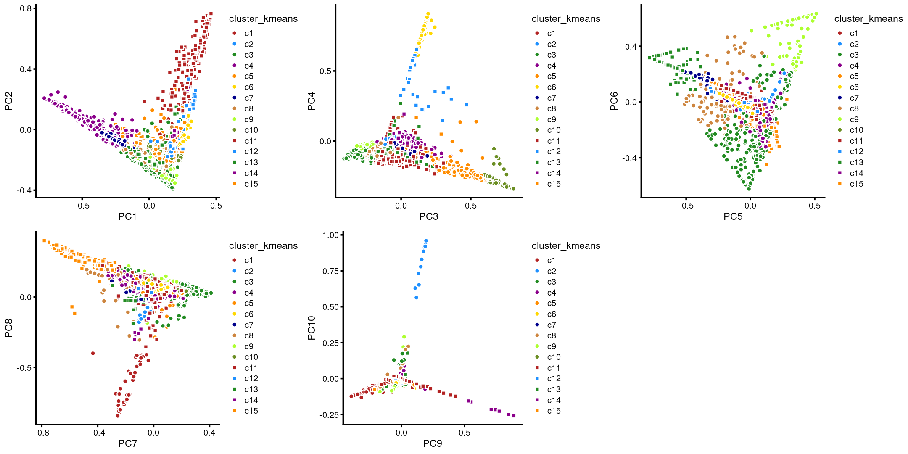
plot_grid(p.pca2.1,p.pca2.2,p.pca2.3,p.pca2.4,p.pca2.5)
We then label the cells in each cluster with the known cell labels.
Cell labels:
samples$label <- as.factor(samples$label)
cat(length(levels(samples$label)), "cell labels. \n")
table(samples$label)
# 10 cell labels.
#
# CLP CMP GMP HSC LMPP MEP mono MPP pDC UNK
# 78 502 402 347 160 138 64 142 141 60We can see a few clusters are dominated by one major cell type:
freq_cluster_cells <- with(samples,table(label,cluster_kmeans))
print(freq_cluster_cells)
# cluster_kmeans
# label c1 c2 c3 c4 c5 c6 c7 c8 c9 c10 c11 c12 c13 c14 c15
# CLP 0 0 0 0 7 0 0 0 0 69 0 0 2 0 0
# CMP 0 0 241 52 0 0 8 107 26 0 8 0 36 0 24
# GMP 60 0 0 1 17 0 0 2 1 10 281 15 9 2 4
# HSC 0 0 0 293 1 0 40 0 0 0 0 0 12 0 1
# LMPP 0 0 0 5 54 0 0 0 0 27 1 0 8 0 65
# MEP 0 56 1 0 0 0 0 1 80 0 0 0 0 0 0
# mono 0 0 0 0 0 0 0 0 0 0 0 0 0 64 0
# MPP 0 4 2 97 0 0 14 3 1 0 0 0 19 0 2
# pDC 0 0 0 0 0 126 0 0 0 0 0 15 0 0 0
# UNK 31 0 0 0 0 0 0 1 0 0 0 0 0 0 28Plot the distribution of cell labels by clusters.
Stacked barplot for the counts of cell labels by clusters:
library(plyr);library(dplyr)
# ------------------------------------------------------------------------------
# You have loaded plyr after dplyr - this is likely to cause problems.
# If you need functions from both plyr and dplyr, please load plyr first, then dplyr:
# library(plyr); library(dplyr)
# ------------------------------------------------------------------------------
#
# Attaching package: 'plyr'
# The following objects are masked from 'package:dplyr':
#
# arrange, count, desc, failwith, id, mutate, rename, summarise,
# summarize
library(RColorBrewer)
freq_cluster_celltype <- count(samples, vars=c("cluster_kmeans","label"))
n_colors <- length(levels(samples$label))
colors_labels <- brewer.pal(10, "Set3")
# stacked barplot for the counts of cell labels by clusters
p.barplot.1 <- ggplot(freq_cluster_celltype, aes(fill=label, y=freq, x=cluster_kmeans)) +
geom_bar(position="stack", stat="identity") +
theme_classic() + xlab("Cluster") + ylab("Number of cells") +
scale_fill_manual(values = colors_labels) +
guides(fill=guide_legend(ncol=2)) +
theme(
legend.title = element_text(size = 10),
legend.text = element_text(size = 8)
)
print(p.barplot.1)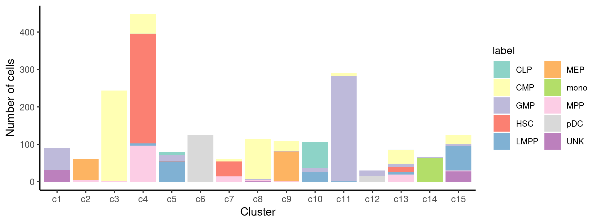
Percent stacked barplot for the counts of cell labels by clusters:
freq_cluster_celltype <- count(samples, vars=c("cluster_kmeans","label"))
n_colors <- length(levels(samples$label))
colors_labels <- brewer.pal(10, "Set3")
p.barplot.2 <- ggplot(freq_cluster_celltype, aes(fill=label, y=freq, x=cluster_kmeans)) +
geom_bar(position="fill", stat="identity") +
theme_classic() + xlab("Cluster") + ylab("Proportion of cells") +
scale_fill_manual(values = colors_labels) +
guides(fill=guide_legend(ncol=2)) +
theme(
legend.title = element_text(size = 10),
legend.text = element_text(size = 8)
)
print(p.barplot.2)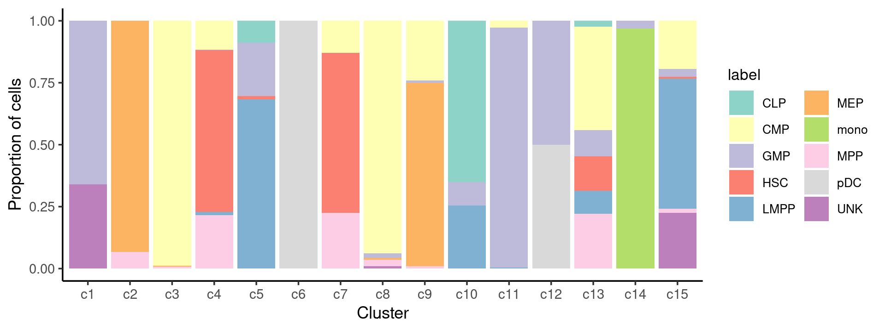
Binarized counts
Load the binarized data
data.dir <- "/project2/mstephens/kevinluo/scATACseq-topics/data/Buenrostro_2018/processed_data_Chen2019pipeline/chromVAR/"
load(file.path(data.dir, "Buenrostro_2018_binarized_scPeaks.RData"))
cat(sprintf("%d x %d counts matrix.\n",nrow(counts),ncol(counts)))
rm(counts)
samples$cell <- rownames(samples)
samples$label <- as.factor(samples$label)
# 2034 x 228965 counts matrix.Plot PCs of the topic proportions
We first use PCA to explore the structure inferred from the multinomial topic model with \(k = 11\):
out.dir <- "/project2/mstephens/kevinluo/scATACseq-topics/output/Buenrostro_2018_chromVAR_scPeaks/binarized/"
fit <- readRDS(file.path(out.dir, "/fit-Buenrostro2018-binarized-scd-ex-k=11.rds"))$fit
colors_topics <- c("#a6cee3","#1f78b4","#b2df8a","#33a02c","#fb9a99","#e31a1c",
"#fdbf6f","#ff7f00","#cab2d6","#6a3d9a","#ffff99")Plot PCs of the topic proportions.
p.pca1.1 <- pca_plot(poisson2multinom(fit),pcs = 1:2,fill = "none")
p.pca1.2 <- pca_plot(poisson2multinom(fit),pcs = 3:4,fill = "none")
p.pca1.3 <- pca_plot(poisson2multinom(fit),pcs = 5:6,fill = "none")
p.pca1.4 <- pca_plot(poisson2multinom(fit),pcs = 7:8,fill = "none")
p.pca1.5 <- pca_plot(poisson2multinom(fit),pcs = 9:10,fill = "none")
plot_grid(p.pca1.1,p.pca1.2,p.pca1.3,p.pca1.4,p.pca1.5)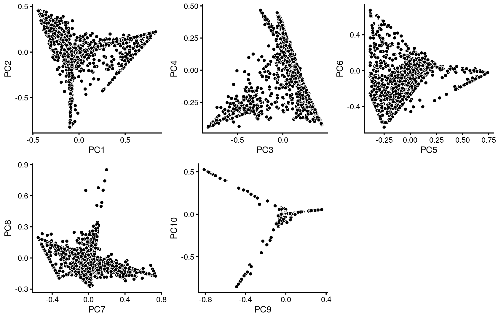
Some of the structure is more evident from “hexbin” plots showing the density of the points.
breaks <- c(0,1,5,10,100,Inf)
p.pca2.1 <- pca_hexbin_plot(poisson2multinom(fit), pcs = 1:2, breaks = breaks) + guides(fill = "none")
p.pca2.2 <- pca_hexbin_plot(poisson2multinom(fit), pcs = 3:4, breaks = breaks) + guides(fill = "none")
p.pca2.3 <- pca_hexbin_plot(poisson2multinom(fit), pcs = 5:6, breaks = breaks) + guides(fill = "none")
p.pca2.4 <- pca_hexbin_plot(poisson2multinom(fit), pcs = 7:8, breaks = breaks) + guides(fill = "none")
p.pca2.5 <- pca_hexbin_plot(poisson2multinom(fit), pcs = 9:10, breaks = breaks) + guides(fill = "none")
plot_grid(p.pca2.1,p.pca2.2,p.pca2.3,p.pca2.4,p.pca2.5)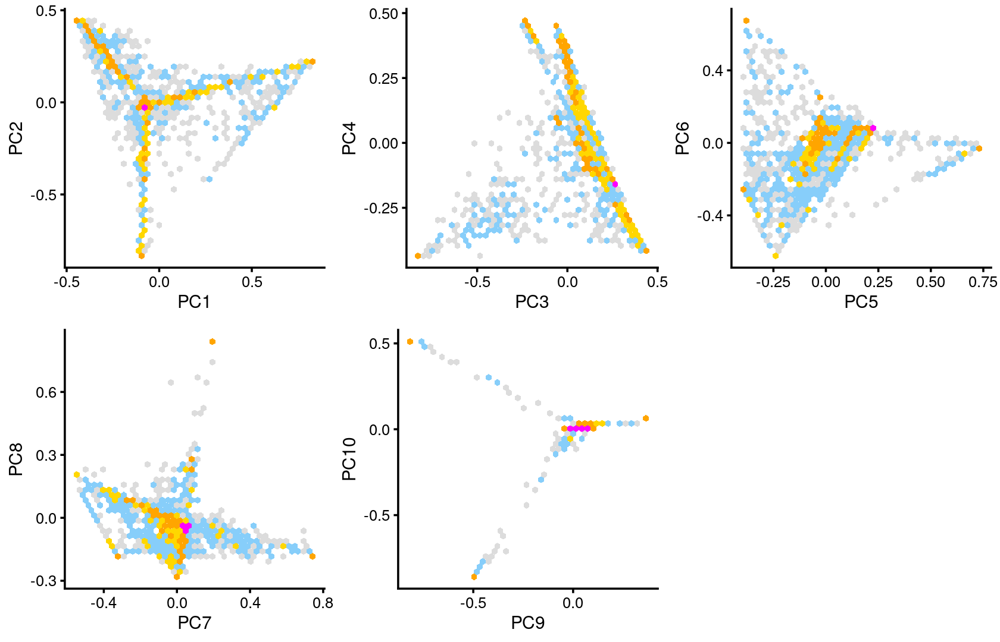
Layer the cell labels onto the PC plots
Here, we layer the cell labels onto the PC plots.
p.pca3.1 <- labeled_pca_plot(fit,1:2,samples$label,font_size = 7,
legend_label = "Cell labels")
p.pca3.2 <- labeled_pca_plot(fit,3:4,samples$label,font_size = 7,
legend_label = "Cell labels")
p.pca3.3 <- labeled_pca_plot(fit,5:6,samples$label,font_size = 7,
legend_label = "Cell labels")
p.pca3.4 <- labeled_pca_plot(fit,7:8,samples$label,font_size = 7,
legend_label = "Cell labels")
p.pca3.5 <- labeled_pca_plot(fit,9:10,samples$label,font_size = 7,
legend_label = "Cell labels")
plot_grid(p.pca3.1,p.pca3.2,p.pca3.3,p.pca3.4,p.pca3.5)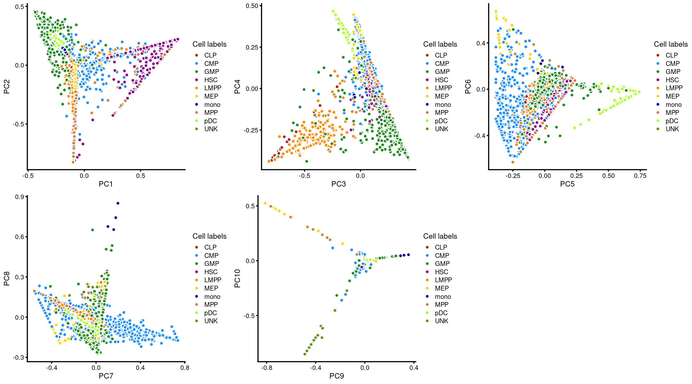
Visualize by structure plot grouped by cell labels.
set.seed(10)
samples$label <- as.factor(samples$label)
p.structure.1 <- structure_plot(poisson2multinom(fit),
grouping = samples[, "label"],
n = Inf,gap = 20,
perplexity = 50,topics = 1:11,colors = colors_topics,
num_threads = 4,verbose = FALSE)
# Perplexity automatically changed to 24 because original setting of 50 was too large for the number of samples (78)
# Perplexity automatically changed to 44 because original setting of 50 was too large for the number of samples (138)
# Perplexity automatically changed to 20 because original setting of 50 was too large for the number of samples (64)
# Perplexity automatically changed to 46 because original setting of 50 was too large for the number of samples (142)
# Perplexity automatically changed to 45 because original setting of 50 was too large for the number of samples (141)
# Perplexity automatically changed to 18 because original setting of 50 was too large for the number of samples (60)
print(p.structure.1)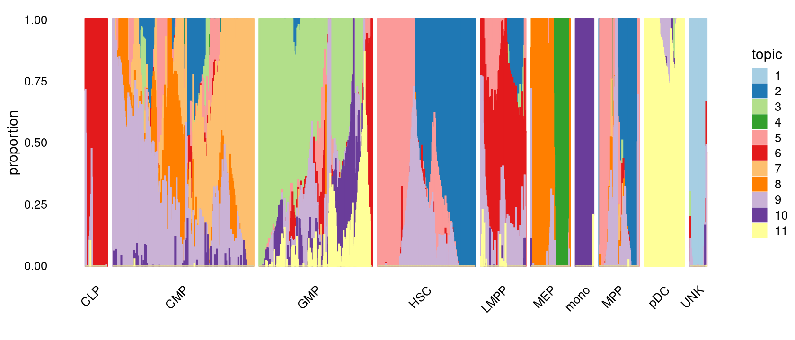
k-means clustering on topic proportions
Define clusters using k-means, and then create structure plot based on the clusters from k-means.
Define clusters using k-means with 10 clusters:
set.seed(10)
clusters.10 <- factor(kmeans(poisson2multinom(fit)$L,centers = 10)$cluster)
print(sort(table(clusters.10),decreasing = TRUE))
# clusters.10
# 1 6 4 7 10 3 9 8 5 2
# 345 300 265 245 213 205 154 144 101 62Structure plot based on k-means clusters
p.structure.2 <- structure_plot(poisson2multinom(fit),
grouping = clusters.10,
# rows = order(samples$label), # samples are grouped by clusters first, then by celltype labels
n = Inf,gap = 20,
perplexity = 50,topics = 1:11,colors = colors_topics,
num_threads = 4,verbose = FALSE)
# Perplexity automatically changed to 19 because original setting of 50 was too large for the number of samples (62)
# Perplexity automatically changed to 32 because original setting of 50 was too large for the number of samples (101)
# Perplexity automatically changed to 46 because original setting of 50 was too large for the number of samples (144)
print(p.structure.2)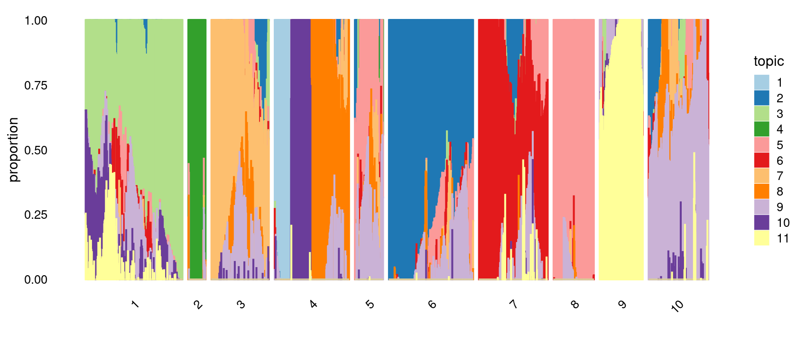
Define clusters using k-means with 15 clusters:
set.seed(10)
clusters.15 <- factor(kmeans(poisson2multinom(fit)$L,centers = 15)$cluster)
print(sort(table(clusters.15),decreasing = TRUE))
# clusters.15
# 1 6 3 9 7 15 8 12 13 5 14 2 4 10 11
# 337 293 204 183 162 154 142 132 101 80 70 59 58 51 8Structure plot based on k-means clusters
p.structure.3 <- structure_plot(poisson2multinom(fit),
grouping = clusters.15,
# rows = order(samples$label), # samples are grouped by clusters first, then by celltype labels
n = Inf,gap = 20,
perplexity = 50,topics = 1:11, colors = colors_topics,
num_threads = 4,verbose = FALSE)
# Perplexity automatically changed to 18 because original setting of 50 was too large for the number of samples (59)
# Perplexity automatically changed to 18 because original setting of 50 was too large for the number of samples (58)
# Perplexity automatically changed to 25 because original setting of 50 was too large for the number of samples (80)
# Perplexity automatically changed to 46 because original setting of 50 was too large for the number of samples (142)
# Perplexity automatically changed to 15 because original setting of 50 was too large for the number of samples (51)
# Perplexity automatically changed to 1 because original setting of 50 was too large for the number of samples (8)
# Perplexity automatically changed to 42 because original setting of 50 was too large for the number of samples (132)
# Perplexity automatically changed to 32 because original setting of 50 was too large for the number of samples (101)
# Perplexity automatically changed to 22 because original setting of 50 was too large for the number of samples (70)
print(p.structure.3)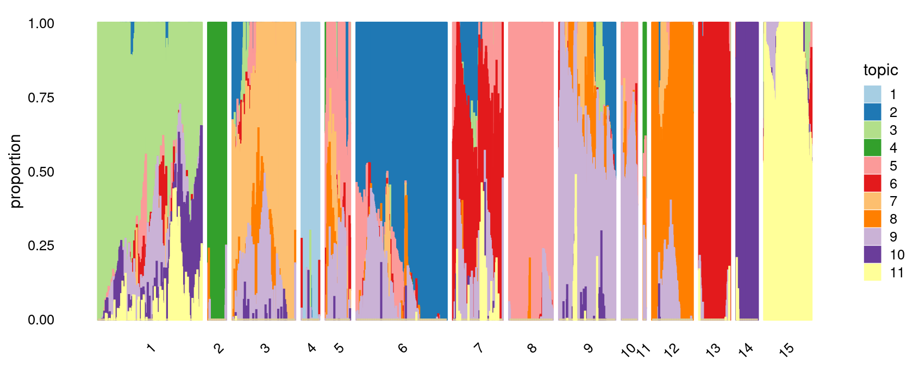
Define clusters using k-means with 20 clusters:
set.seed(10)
clusters.20 <- factor(kmeans(poisson2multinom(fit)$L,centers = 20)$cluster)
print(sort(table(clusters.20),decreasing = TRUE))
# clusters.20
# 18 1 6 7 14 4 16 19 12 5 13 9 3 17 2 15 8 20 10 11
# 199 165 163 161 149 148 132 130 118 95 90 88 79 70 57 48 46 44 43 9Structure plot based on k-means clusters
p.structure.4 <- structure_plot(poisson2multinom(fit),
grouping = clusters.20,
# rows = order(samples$label), # samples are grouped by clusters first, then by celltype labels
n = Inf,gap = 20,
perplexity = 50,topics = 1:11, colors = colors_topics,
num_threads = 4,verbose = FALSE)
# Perplexity automatically changed to 17 because original setting of 50 was too large for the number of samples (57)
# Perplexity automatically changed to 25 because original setting of 50 was too large for the number of samples (79)
# Perplexity automatically changed to 48 because original setting of 50 was too large for the number of samples (148)
# Perplexity automatically changed to 30 because original setting of 50 was too large for the number of samples (95)
# Perplexity automatically changed to 14 because original setting of 50 was too large for the number of samples (46)
# Perplexity automatically changed to 28 because original setting of 50 was too large for the number of samples (88)
# Perplexity automatically changed to 13 because original setting of 50 was too large for the number of samples (43)
# Perplexity automatically changed to 1 because original setting of 50 was too large for the number of samples (9)
# Perplexity automatically changed to 38 because original setting of 50 was too large for the number of samples (118)
# Perplexity automatically changed to 28 because original setting of 50 was too large for the number of samples (90)
# Perplexity automatically changed to 48 because original setting of 50 was too large for the number of samples (149)
# Perplexity automatically changed to 14 because original setting of 50 was too large for the number of samples (48)
# Perplexity automatically changed to 42 because original setting of 50 was too large for the number of samples (132)
# Perplexity automatically changed to 22 because original setting of 50 was too large for the number of samples (70)
# Perplexity automatically changed to 42 because original setting of 50 was too large for the number of samples (130)
# Perplexity automatically changed to 13 because original setting of 50 was too large for the number of samples (44)
print(p.structure.4)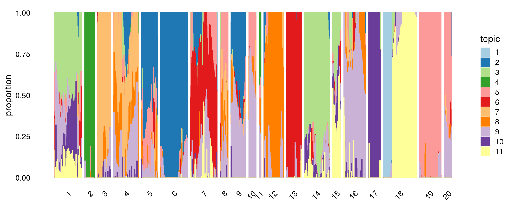
Refine clusters
We then further refine the clusters based on k-means result with 20 clusters: merge clusters 3 and 4; merge clusters 5 and 6; merge clusters 7 and 13; merge clusters 19 and 20.
clusters.merged <- clusters.20
clusters.merged[clusters.20 %in% c(3,4)] <- 3
clusters.merged[clusters.20 %in% c(5,6)] <- 5
clusters.merged[clusters.20 %in% c(7,13)] <- 7
clusters.merged[clusters.20 %in% c(19,20)] <- 19
clusters.merged <- factor(clusters.merged, labels = paste0("c", c(1:length(unique(clusters.merged)))))
samples$cluster_kmeans <- clusters.merged
table(clusters.merged)
# clusters.merged
# c1 c2 c3 c4 c5 c6 c7 c8 c9 c10 c11 c12 c13 c14 c15 c16
# 165 57 227 258 251 46 88 43 9 118 149 48 132 70 199 174p.structure.refined <- structure_plot(poisson2multinom(fit),
grouping = clusters.merged,
# rows = order(samples$label), # samples are grouped by clusters first, then by celltype labels
n = Inf,gap = 20,
perplexity = 50,topics = 1:11,colors = colors_topics,
num_threads = 4,verbose = FALSE)
# Perplexity automatically changed to 17 because original setting of 50 was too large for the number of samples (57)
# Perplexity automatically changed to 14 because original setting of 50 was too large for the number of samples (46)
# Perplexity automatically changed to 28 because original setting of 50 was too large for the number of samples (88)
# Perplexity automatically changed to 13 because original setting of 50 was too large for the number of samples (43)
# Perplexity automatically changed to 1 because original setting of 50 was too large for the number of samples (9)
# Perplexity automatically changed to 38 because original setting of 50 was too large for the number of samples (118)
# Perplexity automatically changed to 48 because original setting of 50 was too large for the number of samples (149)
# Perplexity automatically changed to 14 because original setting of 50 was too large for the number of samples (48)
# Perplexity automatically changed to 42 because original setting of 50 was too large for the number of samples (132)
# Perplexity automatically changed to 22 because original setting of 50 was too large for the number of samples (70)
print(p.structure.refined)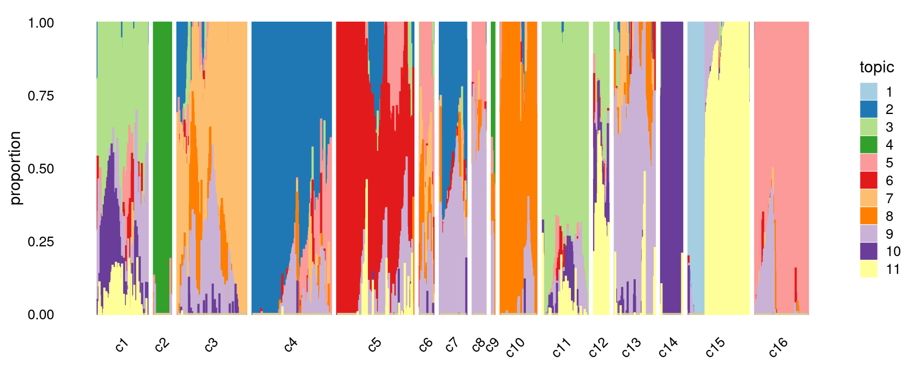
Group samples by k-means clusters first, then by celltype labels:
p.structure.refined <- structure_plot(poisson2multinom(fit),
grouping = clusters.merged,
rows = order(samples$label), # samples are grouped by clusters first, then by celltype labels
n = Inf,gap = 20,
perplexity = 50,topics = 1:11,colors = colors_topics,
num_threads = 4,verbose = FALSE)
print(p.structure.refined)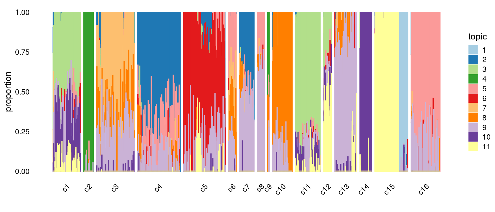
The clusters defined by k-means on topic proportions reasonably identify the clusters shown in the PCA hexbin plots (below).
p.pca.4.1 <- labeled_pca_plot(fit,1:2,samples$cluster_kmeans,font_size = 7,
legend_label = "cluster_kmeans")
p.pca.4.2 <- labeled_pca_plot(fit,3:4,samples$cluster_kmeans,font_size = 7,
legend_label = "cluster_kmeans")
p.pca.4.3 <- labeled_pca_plot(fit,5:6,samples$cluster_kmeans,font_size = 7,
legend_label = "cluster_kmeans")
p.pca.4.4 <- labeled_pca_plot(fit,7:8,samples$cluster_kmeans,font_size = 7,
legend_label = "cluster_kmeans")
p.pca.4.5 <- labeled_pca_plot(fit,9:10,samples$cluster_kmeans,font_size = 7,
legend_label = "cluster_kmeans")
plot_grid(p.pca.4.1,p.pca.4.2,p.pca.4.3,p.pca.4.4,p.pca.4.5)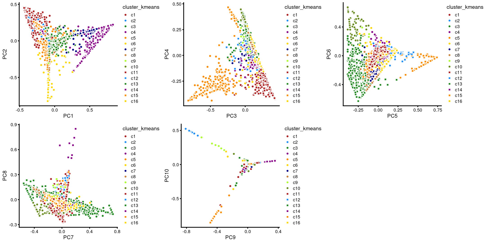
plot_grid(p.pca2.1,p.pca2.2,p.pca2.3,p.pca2.4,p.pca2.5)We then label the cells in each cluster with the known cell labels.
Cell labels:
samples$label <- as.factor(samples$label)
cat(length(levels(samples$label)), "cell labels. \n")
table(samples$label)
# 10 cell labels.
#
# CLP CMP GMP HSC LMPP MEP mono MPP pDC UNK
# 78 502 402 347 160 138 64 142 141 60We can see a few clusters are dominated by one major cell type:
freq_cluster_cells <- with(samples,table(label,cluster_kmeans))
print(freq_cluster_cells)
# cluster_kmeans
# label c1 c2 c3 c4 c5 c6 c7 c8 c9 c10 c11 c12 c13 c14 c15 c16
# CLP 0 0 0 0 77 0 0 0 0 0 0 0 1 0 0 0
# CMP 11 0 226 22 1 37 30 22 0 39 0 0 102 0 0 12
# GMP 150 0 0 0 28 5 0 0 0 1 149 46 12 6 5 0
# HSC 0 0 0 162 0 0 53 11 0 0 0 0 2 0 0 119
# LMPP 3 0 0 3 143 0 0 1 0 0 0 0 8 0 0 2
# MEP 0 55 0 0 0 0 0 0 4 78 0 0 1 0 0 0
# mono 0 0 0 0 0 0 0 0 0 0 0 0 0 64 0 0
# MPP 0 2 1 71 0 4 5 9 5 0 0 0 4 0 0 41
# pDC 0 0 0 0 0 0 0 0 0 0 0 2 1 0 138 0
# UNK 1 0 0 0 2 0 0 0 0 0 0 0 1 0 56 0Plot the distribution of cell labels by clusters.
Stacked barplot for the counts of cell labels by clusters:
library(plyr);library(dplyr)
library(RColorBrewer)
freq_cluster_celltype <- count(samples, vars=c("cluster_kmeans","label"))
n_colors <- length(levels(samples$label))
colors_labels <- brewer.pal(10, "Set3")
# stacked barplot for the counts of cell labels by clusters
p.barplot.1 <- ggplot(freq_cluster_celltype, aes(fill=label, y=freq, x=cluster_kmeans)) +
geom_bar(position="stack", stat="identity") +
theme_classic() + xlab("Cluster") + ylab("Number of cells") +
scale_fill_manual(values = colors_labels) +
guides(fill=guide_legend(ncol=2)) +
theme(
legend.title = element_text(size = 10),
legend.text = element_text(size = 8)
)
print(p.barplot.1)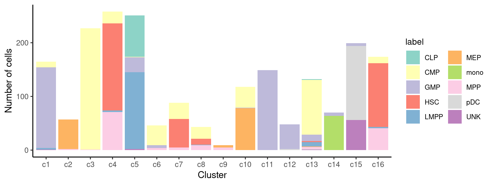
Percent stacked barplot for the counts of cell labels by clusters:
freq_cluster_celltype <- count(samples, vars=c("cluster_kmeans","label"))
n_colors <- length(levels(samples$label))
colors_labels <- brewer.pal(10, "Set3")
p.barplot.2 <- ggplot(freq_cluster_celltype, aes(fill=label, y=freq, x=cluster_kmeans)) +
geom_bar(position="fill", stat="identity") +
theme_classic() + xlab("Cluster") + ylab("Proportion of cells") +
scale_fill_manual(values = colors_labels) +
guides(fill=guide_legend(ncol=2)) +
theme(
legend.title = element_text(size = 10),
legend.text = element_text(size = 8)
)
print(p.barplot.2)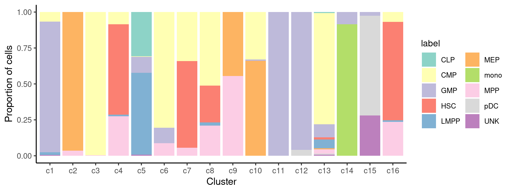
sessionInfo()
# R version 3.6.1 (2019-07-05)
# Platform: x86_64-pc-linux-gnu (64-bit)
# Running under: Scientific Linux 7.4 (Nitrogen)
#
# Matrix products: default
# BLAS/LAPACK: /software/openblas-0.2.19-el7-x86_64/lib/libopenblas_haswellp-r0.2.19.so
#
# locale:
# [1] LC_CTYPE=en_US.UTF-8 LC_NUMERIC=C
# [3] LC_TIME=en_US.UTF-8 LC_COLLATE=en_US.UTF-8
# [5] LC_MONETARY=en_US.UTF-8 LC_MESSAGES=en_US.UTF-8
# [7] LC_PAPER=en_US.UTF-8 LC_NAME=C
# [9] LC_ADDRESS=C LC_TELEPHONE=C
# [11] LC_MEASUREMENT=en_US.UTF-8 LC_IDENTIFICATION=C
#
# attached base packages:
# [1] stats graphics grDevices utils datasets methods base
#
# other attached packages:
# [1] RColorBrewer_1.1-2 plyr_1.8.6 fastTopics_0.3-180 cowplot_1.0.0
# [5] ggplot2_3.3.2 dplyr_0.8.5 Matrix_1.2-18 workflowr_1.6.2
#
# loaded via a namespace (and not attached):
# [1] ggrepel_0.8.2 Rcpp_1.0.5 lattice_0.20-38 tidyr_1.1.0
# [5] prettyunits_1.1.1 assertthat_0.2.1 rprojroot_1.3-2 digest_0.6.27
# [9] R6_2.5.0 backports_1.1.10 MatrixModels_0.4-1 evaluate_0.14
# [13] coda_0.19-3 httr_1.4.1 pillar_1.4.6 rlang_0.4.8
# [17] progress_1.2.2 lazyeval_0.2.2 data.table_1.12.8 irlba_2.3.3
# [21] SparseM_1.77 whisker_0.4 hexbin_1.28.1 rmarkdown_2.1
# [25] labeling_0.4.2 Rtsne_0.15 stringr_1.4.0 htmlwidgets_1.5.1
# [29] munsell_0.5.0 compiler_3.6.1 httpuv_1.5.3.1 xfun_0.14
# [33] pkgconfig_2.0.3 mcmc_0.9-7 htmltools_0.4.0 tidyselect_1.1.0
# [37] tibble_3.0.4 quadprog_1.5-7 viridisLite_0.3.0 crayon_1.3.4
# [41] withr_2.3.0 later_1.0.0 MASS_7.3-51.6 grid_3.6.1
# [45] jsonlite_1.6 gtable_0.3.0 lifecycle_0.2.0 git2r_0.27.1
# [49] magrittr_1.5 scales_1.1.1 RcppParallel_4.4.3 stringi_1.4.6
# [53] farver_2.0.3 fs_1.3.1 promises_1.1.0 ellipsis_0.3.1
# [57] vctrs_0.3.4 tools_3.6.1 glue_1.4.2 purrr_0.3.4
# [61] hms_0.5.3 yaml_2.2.0 colorspace_1.4-1 plotly_4.9.0
# [65] knitr_1.28 quantreg_5.41 MCMCpack_1.4-4